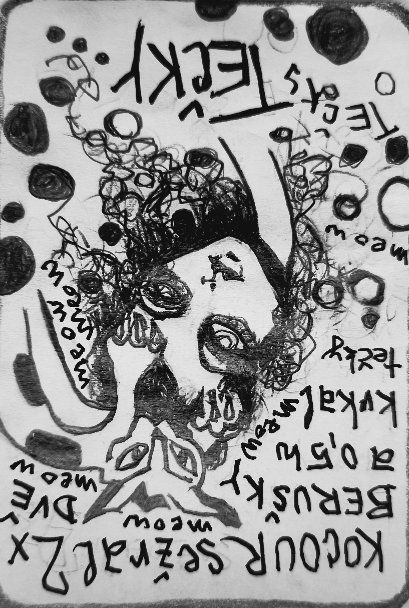

Zapsáno rukou, která nechtěla nic vysvětlit.
O KOCOUROVI
Jak kocour sežral dvě berušky a půl hodiny krkal tečky
_________________
Sležral dvě - ne tři, ne jednu - dvě - přesně - 14 teček a trvalo to půl hodiny - 30 minut - přesně.
Jak to přišlo tak to přestalo.
Ráz na ráz.
Chňap a hlt a chlamst - nebo něco takového a nakonec - mlask, mlask - dvakrát - přesně.
Žily byly dvě berušky, každá sedm teček měla, když uviděl je jeden kocour byla to mela.
Aspoň pro ně.
Po 14ti tečkách
v jednom mžiku
zem se slehla.
Rozhodně aspoň kocour se svými útrobami.
Ale ta myš, vždycky zvědavá byla.
Odmalička chodívala
a kde mohla se vyptávala,
kde se tečky na beruškách vzaly?
K čemu je maji?
Proč si radši nevytvoří pravý maskování?
A ta přesná matika..
Kdo vlastně z těch, co s nimi přijdou do styku, takhle přesně počítá?
No a toho dne - náhle - se to stalo
a myš svou odpověď měla.
Kocour mlaskl a pak znovu
a hned na to začalo to.
Půl hodiny a bylo to zaznamenáno - přesně.
Kocour krkal tečky a dokončoval věty!
Někdy celé souvětí!!
Jenomže tím zároveň skákal lidem do řeči,
tím že za ně dokončoval, co nedokončili.
Skočil všem do řeči koncem věty
ale vždycky o něco málo
někdy i o docela dost
dřív, než měla věta původně skončit
nebo - než původně věta skončit měla.
A celou půlhodinu nemohl tenkrát nikdo nic
ne - dokončit.
Nešlo to.
Každému dřív.
než se k tomu dostal.
všem kocour větu ukončil.
Hned.
Kocour se tomu smál,
ale krkal dál.
A krkal, dokud neskončil.
Představte si to:
Skončil větu a pak skončil krkat.
A lidé zase začali moct své věty ukončovat sami.
Hned.
Jenže, jak se to tak občas stává,
přestože nikdo nevěděl co,
každý věděl,
že něco nebylo stejné.
A to, co jednou není stejné dnes,
to není jednou stejné nikdy.
Jen nedokončené věty bývají všechny stejné. Jednou, dnes i zítra.
Berušky mají na sobě nedokončené konce vět. Věci, které jsou nespolknuté.
Kocour to nevěděl - a dvě spolknul.
Spolknuté konce ale vykrkal zpátky
a lide se naučili,
že všechno se spolknout nedá.
A že tečka je někdy silnější, než celá věta.
Kocour se nažral a myš i věty zůstali celé.
Díky bohu za to.
Štěstí dvou berušek se vrátilo zpátky.
Ale všimly si toho jen kocour a malá myš.
A ani jeden neříkali nic.
KONEC